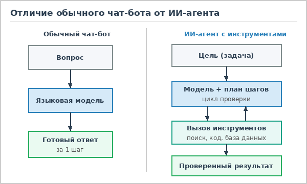
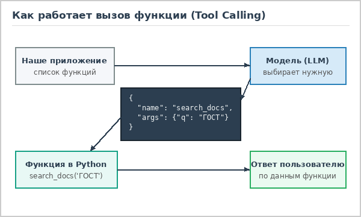
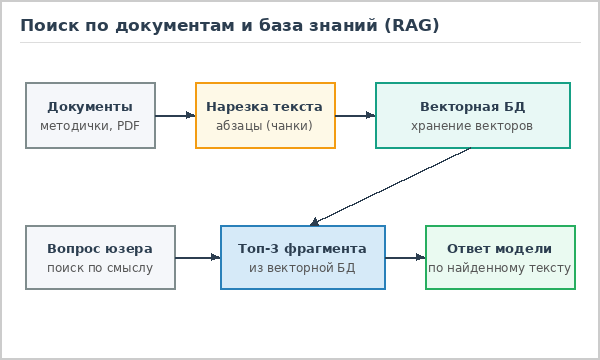
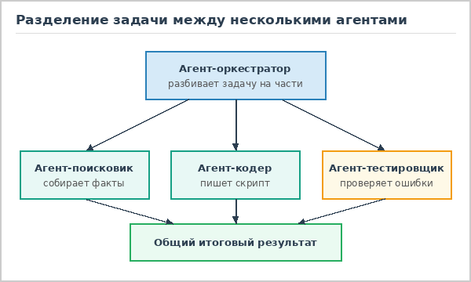

В чем разница между обычным чат-ботом и ИИ-агентом

Когда мы открываем обычный чат с нейросетью и пишем туда вопрос, все происходит в один шаг: модель читает наш текст, предсказывает наиболее вероятное продолжение и выдает ответ на экран. На этом ее работа заканчивается. У такого подхода есть понятные минусы: языковая модель не знает, что произошло сегодня утром, не может заглянуть в закрытую базу данных университета или компании, а при сложных вычислениях в столбик легко ошибается, потому что она просто угадывает слова, а не считает.
ИИ-агент решает эту проблему за счет того, что вокруг самой модели достраивается программная обвязка. Агенту дают не просто вопрос, а конкретную цель - например, "проверь, есть ли в репозитории ошибки в верстке, и составь список замечаний". Получив такую задачу, модель не спешит сразу писать финальный ответ. Сначала она составляет план действий, затем выбирает нужный внешний инструмент (например, чтение файла или поиск по базе), запускает его через программу-обертку, читает полученный ответ и решает, какой шаг сделать следующим.

Самое интересное тут то, что нейросеть сама по себе не умеет нажимать кнопки или запускать скрипты. Чтобы дать ей "руки", программист описывает список доступных функций и передает это описание в системном промпте. Если во время решения задачи модели нужно узнать погоду, посчитать выражение в Python или достать строчку из SQL-таблицы, она возвращает специальный JSON-объект с именем функции и параметрами. Наше приложение перехватывает этот JSON, выполняет реальный код и возвращает результат обратно в диалог.
За счет такого цикла агент может сам замечать и исправлять свои ошибки. Допустим, он написал поисковый запрос к документации, но поиск вернул пустой список. Обычный бот на этом месте либо скажет, что ничего не знает, либо начнет выдумывать факты из головы (галлюцинировать). Агент же увидит пустой результат, поменяет ключевые слова и попробует поискать еще раз. Конечно, чтобы программа не ушла в бесконечный цикл, разработчики обязательно ставят ограничение на максимальное число шагов и проверяют все опасные действия перед выполнением.


На отдельной странице "Как устроен агент" я подробно разобрал все пять основных составляющих такой системы: цикл рассуждений ReAct, механизм вызова инструментов, подключение базы знаний через RAG, командную работу нескольких агентов и автоматическое тестирование (эвалы). А ниже можно перейти к выполненным учебным заданиям по курсу верстки.